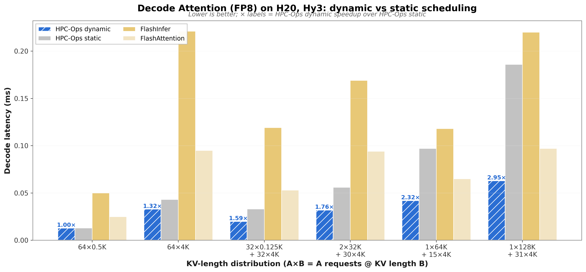
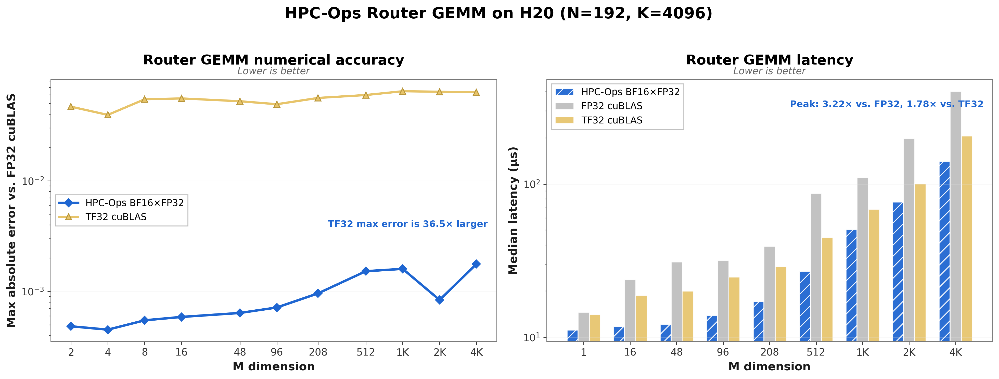
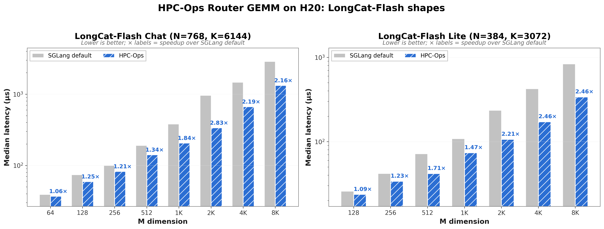
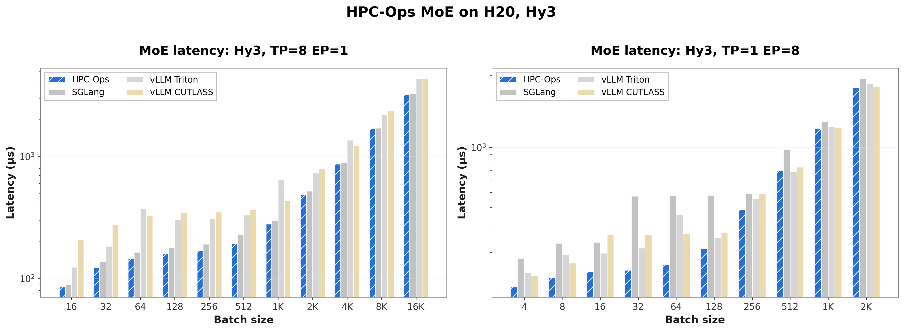
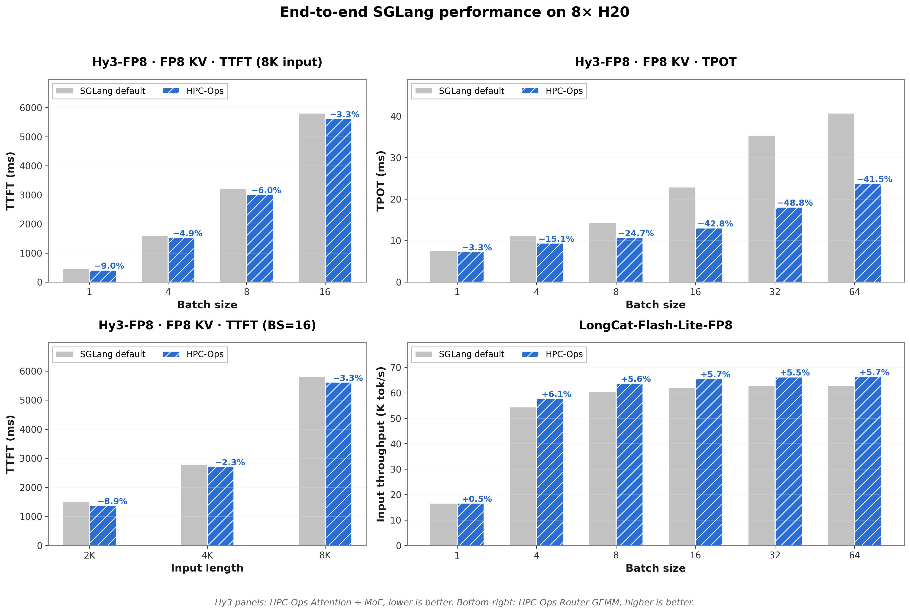

HPC‑Ops × SGLang: High‑Performance Attention, Router GEMM, and MoE Kernels from Tencent Hunyuan
On this page
- Highlights
- Attention, routing, and experts: three hot paths in MoE model serving
- Attention: load balancing for mixed-length decode
- Scheduling around live KV work
- A fused attention prologue
- Router GEMM: balancing routing precision and throughput
- A precision-aware BF16 formulation
- MoE: reducing overhead around small expert GEMMs
- A fused, latency-oriented MoE pipeline
- From HPC-Ops kernels to SGLang
- Getting started
- Install
- Attention and MoE
- Router GEMM
- Performance evaluation
- H20 operator benchmarks
- H200 operator validation
- End-to-end performance
- H200 serving validation
- What's next
- Acknowledgments
HPC-Ops is an open-source operator library for LLM inference, deployed in Tencent’s large-scale production serving. Its core operators, including Dynamic Attention and Fused MoE, play a critical role in Hunyuan’s online inference, reducing TPOT of Hy3 model by up to 48.8%. HPC-Ops Attention, Router GEMM, and MoE are now integrated into SGLang’s main branch, bringing these production-proven optimizations to the open-source serving community.
In this blog, we introduce the design of three important operators in HPC-Ops and their integration with SGLang. We then present operator benchmarks and serving results on H20 together with the H200 validation results. The integrations target NVIDIA Hopper GPUs (SM90) and have been validated with Qwen3, Hy3, and LongCat workloads.
Highlights
- Attention: On H20, HPC-Ops dynamic scheduling reaches 2.95× over its static split-KV schedule and is on average 2.25× faster than the best of FlashInfer and FlashAttention in each measured case. In upstream H200 validation, the integrated Hy3-FP8 path with FP8 KV cache improves output throughput by 3.7–5.9% over FlashAttention.
- Router GEMM: On H20, HPC-Ops is 1.30–3.22× faster than FP32 cuBLAS, while its maximum absolute error relative to FP32 cuBLAS is 0.00177, versus 0.06464 for TF32 cuBLAS. In the upstream H200 LongCat-Flash kernel validation, it delivers a 4.31× speedup over the existing FP32 path.
- MoE: On H20, HPC-Ops delivers mean per-batch speedups of 1.08× at TP8 / EP1 and 1.21× at TP1 / EP8 over the best of the SGLang and vLLM baselines on Hy3. In the upstream Qwen3/H200 kernel benchmark, it reaches up to 4.21× over Triton at eight tokens.
- End-to-end serving: On 8× H20 with Hy3-FP8, enabling HPC-Ops Attention and MoE together reduces TPOT by 15.1–48.8% at batch sizes 4–64 and TTFT by 3.3–6.0% at batch sizes 4–16. On 8× H20 with LongCat-Flash-Lite-FP8, enabling HPC-Ops Router GEMM improves input throughput by 5.5–6.1% at batch sizes 4–64.
Attention, routing, and experts: three hot paths in MoE model serving
Production MoE serving rarely resembles the uniform workloads measured in isolated kernel benchmarks. It combines mixed-length Attention work, precision-sensitive routing, and sparse expert execution within the same latency-sensitive path; long-context, multi-turn, and agentic workloads further widen the distribution of live KV lengths. Serving performance therefore depends not only on raw matrix-multiplication throughput, but also on workload balance, numerical fidelity, and overhead control.
These constraints surface in three performance-critical stages of MoE model serving. During decode, Attention work scales with each request’s live KV length, making mixed-length batches a load-balancing problem. Router GEMM produces the scores used for top-k selection, where small numerical changes can alter expert choices. The selected experts then process small and uneven token groups, allowing metadata construction, token movement, intermediate storage, and launch overhead to rival the expert GEMMs themselves.
HPC-Ops addresses each stage with a dedicated operator: workload-aware scheduling for Attention, a precision-aware formulation for Router GEMM, and a fused pipeline for MoE that eliminates the standalone gather and reduces launch and intermediate traffic. The upstream integration pairs these operators with SGLang’s serving runtime through its native backend and dispatch interfaces. The following sections explain how each operator is designed.
Attention: load balancing for mixed-length decode
During decode, each new token attends over the request’s full KV cache, so Attention work scales with the live sequence length. A request with 16K cached tokens therefore carries roughly 16× the KV work of one with 1K. In production, prompt and output lengths vary widely, and continuous batching places requests at different stages of generation in the same launch; a batch therefore routinely mixes short KV caches with sequences tens of thousands of tokens long.
A static split-KV schedule maps work to a fixed launch grid over KV heads, requests, and KV chunks, with one partitioning policy shared across the batch. A static split-KV scheduler generally follows one of two policies, neither of which performs well for mixed-length batches. (1) Fix the split count, and long requests produce much heavier chunks: short-request CTAs finish early while a few long-running CTAs determine the kernel tail. (2) Fix the chunk size instead, and the grid must reserve enough splits for the longest request, leaving shorter requests with empty or nearly empty chunks that still consume scheduling slots. One policy creates uneven work; the other schedules nonexistent work.
Scheduling around live KV work
HPC-Ops replaces the static per-request split with a persistent kernel that dynamically balances KV tiles across CTAs according to the batch’s actual length distribution. For each decode batch, an assign kernel builds a global task map from live KV lengths: it slices every sequence into uniform 64-token tiles, sums the tile count across all heads and requests, and divides the total by the number of persistent CTAs to set a per-CTA tile budget. The assignment kernel fills each CTA’s bin up to that budget before spilling into the next, so long sequences span multiple CTAs in proportion to their length while short sequences contribute only the tiles they actually have. A minimum-work floor prevents over-partitioning when total work is small, keeping the downstream combine inexpensive. The task map is generated once per decode step from device-side sequence lengths and reused across Transformer layers, amortizing its cost.
At execution time, each CTA drains its assigned bin. For every descriptor, it computes Attention over one or more contiguous KV tiles and writes a partial output with its log-sum-exp statistic; the same resident CTA continues to the next descriptor until its bin is empty. Because each CTA produces only a subset of the partials for a given request, a final combine kernel reads the actual chunk count per request and head and merges the partials under the correct global softmax normalization. The near-equal bin sizes ensure that CTAs finish at roughly the same time, eliminating the kernel tail that a few unusually long requests would otherwise cause.
A fused attention prologue
For Hy3 FP8, HPC-Ops fuses the Attention prologue after the QKV projection: it applies QK-Norm before RoPE, emits Q in FP8 with a per-token, per-head scale, and writes K and V directly into the paged FP8 cache. It passes the quantized Q and its scale directly to the main Attention kernel, avoiding requantization. The fused path eliminates intermediate tensors and their associated HBM round-trips and separate kernel launches in both prefill and decode.
Router GEMM: balancing routing precision and throughput
Router precision directly affects MoE model quality. At each MoE layer, the router projects hidden states into expert scores, and a top-k selection over these scores determines which experts execute. The score differences between the k-th and (k+1)-th expert can be small, so the arithmetic precision of this projection determines whether the correct experts are selected.
To preserve router precision, some production models retain FP32 router weights even when hidden states are BF16. Casting those weights to BF16 enables BF16 Tensor Core throughput but discards low-order mantissa bits that can flip a top-k decision. A full FP32 GEMM preserves all weight precision, but with lower Tensor Core throughput.
A precision-aware BF16 formulation
HPC-Ops resolves this by decomposing the FP32 weight into two BF16 components. It extracts a BF16 high part by direct truncation, then forms a second BF16 component from the scaled residual . The original weight is approximated as , so the matrix product becomes two BF16 GEMMs whose results are combined with a scale correction to recover the low-order mantissa contribution. A single kernel executes both BF16 multiplications: it loads activation tiles once from shared memory, accumulates both partial results in FP32 registers, applies the scaling in the epilogue, and writes the final FP32 router scores to global memory. This formulation recovers precision close to a full FP32 GEMM while running the main arithmetic on BF16 Tensor Cores.
On the framework side, SGLang caches the decomposed weight pair at model load time and reuses it across requests and CUDA graph replays. A shape-aware dispatch selects between the HPC-Ops kernel and the default path at measured crossover points. Below these points, the single FP32 path is faster because the two-product overhead exceeds the Tensor Core gain.
MoE: reducing overhead around small expert GEMMs
During decode, each expert in an MoE layer receives only a handful of tokens. The resulting expert GEMMs are small and memory-bound, and the GPU’s SMs are underutilized at these shapes. The problem is compounded by load imbalance: the number of tokens routed to each expert varies across experts and shifts from step to step, making it difficult to spread these small, uneven tiles evenly across the available SMs.
Beyond the expert GEMMs themselves, the operations surrounding them introduce substantial overhead. A conventional MoE path chains separate kernels for routing, gathering tokens into per-expert buffers, Gate-Up GEMM, activation and quantization, Down GEMM, and top-k weighted reduction back to token positions. The gather step materializes a full token tensor in HBM before any matmul begins, and each subsequent stage pays its own kernel launch and HBM round-trip for intermediates. When the GEMMs are small, this surrounding overhead consumes a comparable fraction of the stage’s wall time.
A fused, latency-oriented MoE pipeline
For low-batch-size inference, the HPC-Ops MoE backend coordinates routing and index preprocessing, Gate-Up, activation and requantization, Down, and top-k weighted reduction in a low-latency pipeline built around task-map-driven persistent expert GEMMs.
- Routing and index build. Starting from the selected top-k expert IDs, a shared-memory counting pass organizes token–expert assignments into contiguous per-expert output ranges, reducing global atomic pressure and building the routing indices and per-tile task maps consumed directly by the persistent expert GEMMs.
- Gate-Up and activation. The Gate-Up GEMM reads original tokens directly through the routing indices, skipping the standalone gather and its extra HBM traffic. SiLU-and-mul and FP8 requantization then run as one fused kernel whose output the Down GEMM reads directly.
- Occupancy-first, without warp specialization. A single warp group handles both data movement and matrix math rather than reserving separate producer and consumer groups. This raises CTA residency and shifts memory-latency hiding from an intra-CTA software pipeline to cross-CTA hardware scheduling. Persistent grids then consume these task maps and spread the small, uneven expert tiles across the SMs.
- PDL-chained stages. Programmatic Dependent Launch overlaps each downstream kernel launch with the tail of the preceding stage, reducing gaps across Gate-Up, activation, Down, and the final top-k weighted reduction, which restores expert outputs to token order.
Together, these optimizations reduce intermediate traffic and kernel-launch overhead on the critical path.
From HPC-Ops kernels to SGLang
Through SGLang’s native backend and dispatch interfaces, HPC-Ops operates directly on the serving runtime’s existing state while remaining an independently maintained operator library. Attention consumes paged KV storage and live device-side sequence metadata without an additional layout conversion; Router GEMM reuses preprocessed weights and workspace across requests and CUDA graph replays; and MoE follows SGLang’s expert IDs and partitions without additional remapping. These integrations preserve each operator’s intended data path while fitting SGLang’s existing execution model.
The three integrated operator paths are summarized below:
| HPC-Ops operator | What it optimizes | Precision | Upstream PRs |
|---|---|---|---|
| Attention | Load-balanced mixed-length decode and a fused QK-Norm, RoPE, quantization, and KV-write prologue | BF16 activations; BF16 or FP8 E4M3 KV cache | #30540, #32304 |
| Router GEMM | Precision-aware router projection using BF16 Tensor Cores while retaining FP32 weight information | BF16 activations × FP32 weights → FP32 scores | #30247, #31943 |
| MoE | Low-overhead execution around small and uneven expert GEMMs | BF16 hidden states; FP8 E4M3 expert weights | #30541 |
Getting started
This guide describes how to use the HPC-Ops Attention, Router GEMM, and MoE operators in SGLang.
Install
To install HPC-Ops from source:
git clone https://github.com/Tencent/hpc-ops.git
cd hpc-ops
make wheel
python3 -m pip install dist/*.whlHPC-Ops is already included in SGLang’s official x86_64
development images (lmsysorg/sglang:dev, or
lmsysorg/sglang:dev-cu12 for CUDA 12.9), so no separate
installation is required when using these images.
Attention and MoE
Attention and MoE are independent backend choices in SGLang and can be enabled separately or together for compatible models such as Qwen3 and Hy3. The following example selects both HPC-Ops backends and enables the FP8 KV-cache Attention path:
python3 -m sglang.launch_server \
--model tencent/Hy3-FP8 \
--tp-size 8 \
--attention-backend hpc_ops \
--kv-cache-dtype fp8_e4m3 \
--page-size 64 \
--moe-runner-backend hpc_opsFor BF16 KV cache, omit --kv-cache-dtype fp8_e4m3. To
use only one HPC-Ops operator, specify only the corresponding backend
option.
Router GEMM
In SGLang, HPC-Ops Router GEMM retains low-order information from FP32 router weights while executing the matrix math on BF16 Tensor Cores. The integrated path has been validated on LongCat-Flash Chat and Lite and is selected automatically for supported model and router shapes. Once HPC-Ops is installed, a standard LongCat-Flash launch can use it:
python3 -m sglang.launch_server \
--model meituan-longcat/LongCat-Flash-Lite-FP8Performance evaluation
The HPC-Ops backends currently support NVIDIA Hopper-architecture GPUs and deliver their best performance on H20. The evaluation below covers operator benchmarks on H20, end-to-end SGLang serving on 8× H20, and the H200 results reported in the upstream SGLang pull requests.
H20 operator benchmarks
Attention.
The Attention scheduler’s headline benefit appears in mixed-length decode, where requests in the same batch can have very different KV-cache lengths. We evaluate FP8 KV-cache decode from uniform to highly skewed distributions; in the table, A×B denotes A requests with KV length B. To isolate the scheduling effect, we compare HPC-Ops dynamic scheduling with its static split-KV counterpart, while FlashInfer and FlashAttention provide additional baselines. The dynamic-vs-static gain grows with skew, from parity on the uniform 64×0.5K batch to 2.95× on the 1×128K + 31×4K mix. Across all six cases, dynamic scheduling is on average 2.25× faster than the best of FlashInfer and FlashAttention in each case.
Table 1: Decode latency across KV-length distributions on H20. Lower is better.
| Decode scenario | HPC-Ops dynamic | HPC-Ops static | FlashInfer | FlashAttention | Dynamic vs. static |
|---|---|---|---|---|---|
| 64×0.5K | 0.013 ms | 0.013 ms | 0.050 ms | 0.025 ms | 1.00× |
| 64×4K | 0.033 ms | 0.043 ms | 0.221 ms | 0.095 ms | 1.32× |
| 32×0.125K + 32×4K | 0.020 ms | 0.033 ms | 0.119 ms | 0.053 ms | 1.59× |
| 2×32K + 30×4K | 0.032 ms | 0.056 ms | 0.169 ms | 0.094 ms | 1.76× |
| 1×64K + 15×4K | 0.042 ms | 0.097 ms | 0.118 ms | 0.065 ms | 2.32× |
| 1×128K + 31×4K | 0.063 ms | 0.186 ms | 0.220 ms | 0.097 ms | 2.95× |

Figure 1: Dynamic scheduling becomes increasingly effective as live KV work grows more skewed. Lower is better.
Router GEMM.
We evaluate Router GEMM first with a generic sweep. Across the measured M values, HPC-Ops is 1.30–3.22× faster than FP32 cuBLAS and 1.25–1.78× faster than TF32 cuBLAS. Using FP32 cuBLAS as the numerical reference, the maximum absolute error remains at or below 0.00177, compared with 0.06464 for TF32.
Table 2: BF16 × FP32 Router GEMM latency at K = 4096, N = 192 on H20. Lower is better.
| M | HPC-Ops | FP32 cuBLAS | TF32 cuBLAS | Speedup vs. FP32 | Speedup vs. TF32 |
|---|---|---|---|---|---|
| 1 | 11.200 µs | 14.576 µs | 14.048 µs | 1.30× | 1.25× |
| 16 | 11.744 µs | 23.808 µs | 18.752 µs | 2.03× | 1.60× |
| 48 | 12.144 µs | 31.008 µs | 20.064 µs | 2.55× | 1.65× |
| 96 | 13.904 µs | 31.760 µs | 24.720 µs | 2.28× | 1.78× |
| 208 | 17.088 µs | 39.280 µs | 28.928 µs | 2.30× | 1.69× |
| 512 | 26.992 µs | 86.976 µs | 44.736 µs | 3.22× | 1.66× |
| 1024 | 50.640 µs | 110.480 µs | 68.544 µs | 2.18× | 1.35× |
| 2048 | 76.688 µs | 198.576 µs | 100.800 µs | 2.59× | 1.31× |
| 4096 | 141.120 µs | 403.728 µs | 205.760 µs | 2.86× | 1.46× |

Figure 2: Router GEMM numerical error relative to FP32 cuBLAS (left) and latency versus FP32 and TF32 cuBLAS (right). Lower is better.
We then retest the two router shapes used by LongCat-Flash. Within SGLang’s model-aware dispatch ranges, HPC-Ops delivers 1.06–2.83× speedup for the Chat shape and 1.09–2.46× for the Lite shape over the SGLang default.
Table 3: LongCat-Flash Router GEMM latency over the SGLang dispatch ranges on H20. Lower is better.
| M | Chat default | Chat HPC-Ops | Speedup | Lite default | Lite HPC-Ops | Speedup |
|---|---|---|---|---|---|---|
| 64 | 39.19 µs | 37.01 µs | 1.06× | — | — | — |
| 128 | 74.18 µs | 59.36 µs | 1.25× | 25.83 µs | 23.72 µs | 1.09× |
| 256 | 100.03 µs | 82.47 µs | 1.21× | 41.87 µs | 34.01 µs | 1.23× |
| 512 | 190.37 µs | 141.73 µs | 1.34× | 71.89 µs | 41.95 µs | 1.71× |
| 1024 | 380.68 µs | 207.00 µs | 1.84× | 108.64 µs | 74.09 µs | 1.47× |
| 2048 | 961.15 µs | 339.04 µs | 2.83× | 235.81 µs | 106.81 µs | 2.21× |
| 4096 | 1469.70 µs | 670.14 µs | 2.19× | 423.52 µs | 172.44 µs | 2.46× |
| 8192 | 2881.00 µs | 1333.84 µs | 2.16× | 835.22 µs | 339.66 µs | 2.46× |

Figure 3: Router GEMM latency on the LongCat-Flash Chat (left) and Lite (right) shapes over SGLang’s dispatch ranges. Lower is better.
MoE.
For MoE, we benchmark the full fused operation under Hy3 shapes at TP8 / EP1 and TP1 / EP8 against SGLang, vLLM Triton, and vLLM CUTLASS. Taking the lowest latency among the three baselines in each row, HPC-Ops delivers a mean per-batch speedup of 1.08× at TP8 / EP1 and 1.21× at TP1 / EP8, with the largest gains at the small-to-mid batch sizes common in low-latency decode.
Table 4: Hy3 MoE latency at TP8 / EP1 on H20. Lower is better.
| Batch | HPC-Ops | SGLang | vLLM Triton | vLLM CUTLASS | Speedup vs. best |
|---|---|---|---|---|---|
| 16 | 85.7 µs | 88.6 µs | 124.2 µs | 209.2 µs | 1.03× |
| 32 | 124.0 µs | 137.2 µs | 184.3 µs | 275.6 µs | 1.11× |
| 64 | 147.2 µs | 164.4 µs | 374.9 µs | 330.3 µs | 1.12× |
| 128 | 161.5 µs | 179.9 µs | 302.9 µs | 345.3 µs | 1.11× |
| 256 | 170.1 µs | 191.5 µs | 310.9 µs | 351.6 µs | 1.13× |
| 512 | 194.5 µs | 230.1 µs | 331.6 µs | 369.2 µs | 1.18× |
| 1024 | 281.4 µs | 300.5 µs | 652.7 µs | 438.3 µs | 1.07× |
| 2048 | 491.8 µs | 522.5 µs | 731.5 µs | 794.4 µs | 1.06× |
| 4096 | 872.0 µs | 899.2 µs | 1366.0 µs | 1230.7 µs | 1.03× |
| 8192 | 1695.0 µs | 1712.7 µs | 2216.8 µs | 2362.9 µs | 1.01× |
| 16384 | 3241.9 µs | 3257.1 µs | 4329.1 µs | 4364.4 µs | 1.00× |
Table 5: Hy3 MoE latency at TP1 / EP8 on H20. Lower is better.
| Batch | HPC-Ops | SGLang | vLLM Triton | vLLM CUTLASS | Speedup vs. best |
|---|---|---|---|---|---|
| 4 | 118.6 µs | 183.1 µs | 147.4 µs | 140.4 µs | 1.18× |
| 8 | 136.7 µs | 231.5 µs | 192.8 µs | 170.7 µs | 1.25× |
| 16 | 149.8 µs | 234.2 µs | 198.4 µs | 263.5 µs | 1.32× |
| 32 | 153.6 µs | 475.3 µs | 214.6 µs | 264.4 µs | 1.40× |
| 64 | 166.5 µs | 477.3 µs | 358.1 µs | 266.8 µs | 1.60× |
| 128 | 213.5 µs | 482.3 µs | 251.7 µs | 272.6 µs | 1.18× |
| 256 | 386.2 µs | 494.3 µs | 454.9 µs | 493.5 µs | 1.18× |
| 512 | 705.5 µs | 970.7 µs | 691.7 µs | 741.7 µs | 0.98× |
| 1024 | 1342.6 µs | 1476.8 µs | 1369.1 µs | 1359.1 µs | 1.01× |
| 2048 | 2513.9 µs | 2871.2 µs | 2668.7 µs | 2530.4 µs | 1.01× |

Figure 4: Hy3 MoE latency across TP8 / EP1 and TP1 / EP8 configurations. Lower is better.
H200 operator validation
The upstream PRs also include H200 serving results, confirming that the performance gains generalize across Hopper GPUs.
Table 6: Operator validation reported in the upstream SGLang pull requests.
| Operator | Upstream validation workload | Comparison | Result |
|---|---|---|---|
| FP8 Attention | Hy3-FP8 with FP8 KV cache; mixed-length decode | HPC-Ops dynamic scheduling vs. HPC-Ops static split-KV | Output throughput +2.0%; total throughput +2.0%; median TTFT −5.3% |
| BF16 Attention | Qwen3 with BF16 KV cache; mixed-length decode | HPC-Ops dynamic scheduling vs. HPC-Ops static split-KV | Output throughput +3.0%; mean E2E latency −2.8%; mean TPOT −2.8% |
| Router GEMM | LongCat-Flash Chat and Lite router shapes | HPC-Ops Router GEMM vs. SGLang default | Kernel speedup: 1.56–4.31× |
| MoE | Qwen3 FP8 MoE workloads from 1 to 4,096 tokens | HPC-Ops MoE vs. SGLang Triton fused experts | Kernel speedup: 0.89–4.21× |
End-to-end performance
The end-to-end evaluation runs on 8× NVIDIA H20 GPUs against the corresponding default SGLang implementations. On Hy3-FP8 at TP8 with FP8 KV cache, we measure the combined serving impact by enabling HPC-Ops Attention and MoE together. On LongCat-Flash-Lite-FP8, only Router GEMM is measured. We also summarize the H200 serving validation reported in the upstream SGLang pull requests.
Hy3-FP8: Attention and MoE.
With an 8K input and 4K output, HPC-Ops reduces TPOT by 3.3% at batch size 1. Across batch sizes 4–64, the reduction grows to 15.1–48.8%.
Table 7: Hy3-FP8 TPOT with FP8 KV cache and HPC-Ops Attention and MoE enabled together. Lower is better.
| Batch | SGLang default | HPC-Ops | Improvement |
|---|---|---|---|
| 1 | 7.56 ms | 7.31 ms | 3.3% |
| 4 | 11.10 ms | 9.42 ms | 15.1% |
| 8 | 14.29 ms | 10.76 ms | 24.7% |
| 16 | 22.90 ms | 13.09 ms | 42.8% |
| 32 | 35.33 ms | 18.09 ms | 48.8% |
| 64 | 40.70 ms | 23.81 ms | 41.5% |
With an 8K input, HPC-Ops improves TTFT by 3.3–9.0% across batch sizes 1–16.
Table 8: Hy3-FP8 TTFT with FP8 KV cache for an 8K input. Positive improvements mean lower latency.
| Batch | SGLang default | HPC-Ops | Improvement |
|---|---|---|---|
| 1 | 460.67 ms | 419.43 ms | 9.0% |
| 4 | 1612.47 ms | 1533.66 ms | 4.9% |
| 8 | 3210.93 ms | 3018.68 ms | 6.0% |
| 16 | 5810.53 ms | 5619.48 ms | 3.3% |
At batch size 16, we also sweep the input length from 2K to 8K with chunked prefill and prefix caching disabled. HPC-Ops improves TTFT by 2.3–8.9% across the three input lengths.
Table 9: Hy3-FP8 TTFT with FP8 KV cache across input lengths at batch size 16. Positive improvements mean lower latency.
| Input length | SGLang default | HPC-Ops | Improvement |
|---|---|---|---|
| 2K | 1509.98 ms | 1375.95 ms | 8.9% |
| 4K | 2779.46 ms | 2715.18 ms | 2.3% |
| 8K | 5810.53 ms | 5619.48 ms | 3.3% |
LongCat-Flash-Lite-FP8: Router GEMM.
Router GEMM is evaluated separately with a 1,024-token input and a 128-token output. Input throughput remains near parity at batch size 1, with a 0.5% improvement, and improves by 5.5–6.1% across batch sizes 4–64.
Table 10: LongCat-Flash-Lite-FP8 input throughput with HPC-Ops Router GEMM. Higher is better.
| Batch | SGLang default | HPC-Ops Router GEMM | Improvement |
|---|---|---|---|
| 1 | 16,612.11 tok/s | 16,695.77 tok/s | 0.5% |
| 4 | 54,466.27 tok/s | 57,810.27 tok/s | 6.1% |
| 8 | 60,425.93 tok/s | 63,833.96 tok/s | 5.6% |
| 16 | 61,995.23 tok/s | 65,539.10 tok/s | 5.7% |
| 32 | 62,833.85 tok/s | 66,306.52 tok/s | 5.5% |
| 64 | 62,841.93 tok/s | 66,422.92 tok/s | 5.7% |

Figure 5: End-to-end SGLang results. The three Hy3-FP8 panels use FP8 KV cache with HPC-Ops Attention and MoE enabled together; the bottom-right panel isolates Router GEMM.
H200 serving validation
The upstream pull requests also evaluated the integrated operators in the SGLang serving loop on H200, providing a model-level integration check beyond the primary H20 tuning target.
Table 11: Model-level serving validation reported in the upstream SGLang pull requests.
| Operator | Upstream validation workload | Comparison | Result |
|---|---|---|---|
| Attention | Hy3-FP8 with FP8 KV cache serving workloads | HPC-Ops Attention vs. FlashAttention | Output throughput: +3.7–5.9% |
| Router GEMM | LongCat-Flash Lite prefill serving workloads | HPC-Ops Router GEMM vs. SGLang default | Input throughput: +2.8–5.4% |
| MoE | Qwen3 and Hy3 FP8 MoE serving workloads | HPC-Ops MoE vs. SGLang default | Output throughput: Qwen3 from parity to +2.7%; Hy3 −4.2% to +6.3% |
The upstream integrations were also checked for numerical and model-level fidelity. Attention tests passed across BF16 and FP8, and the evaluated Hy3 FP8 greedy outputs matched the BF16 path token for token. Router GEMM passed comparisons against the FP32 reference and preserved greedy outputs. For Qwen3, the HPC-Ops MoE path matched Triton’s error against FP32, with a cosine similarity of 0.99974 and a maximum relative error of 0.024. Full configurations and per-case results are available in the upstream PRs.
What’s next
This work is part of a broader collaboration between HPC-Ops and the SGLang community. We will continue working with SGLang maintainers and contributors to improve and extend these operators and upstream additional HPC-Ops capabilities as they mature. Feedback, issues, and benchmarks are very welcome, and we look forward to advancing open, high-performance LLM inference together.
Acknowledgments
We would like to thank the many people across teams who worked together to bring these operators to SGLang:
- Tencent Hunyuan AI Infra — for building and optimizing the HPC-Ops Attention, Router GEMM, and MoE operators and contributing them to SGLang. Sethran Liu, Chase Shao, Shengy Wei, Theo Cheng, Ryann Xue, Lando Jiang, Looper Zhao, Haank Lin, Aiden Ren, Lehua Ding, Chengv Jiang, Steven Kuang, Liqi He, Kipper Gong, Reedlau Liu, Raccoon Liu, Dick Zhu.
- Tencent Network Platform Department — for the close collaboration on communication optimization. Xuan Zhang, Haoran Zhao, Yuanyuan Gong, Yadong Liu, Jinzhu Wang, Yinben Xia, Xiang Li, Quan Wen, Zekun He.
- SGLang — for the open backend interfaces, reviews, and design discussions. Xiaoyu Zhang (BBuf), Xinyuan Tong, Ke Bao, and the entire SGLang team.
- NVIDIA — for the close collaboration on kernel and performance optimization. Yuanhang Sun, Perkz Zheng, Yuxi Chi, Jiang Shao, Jun Gu, Meng Wang, River Liu, Gary Ji, Chandler Zhou.
We also thank the broader open-source kernel community whose work this builds on and measures against, including NVIDIA CUTLASS/CuTe, TensorRT-LLM, FlashInfer, FlashAttention, and Triton.